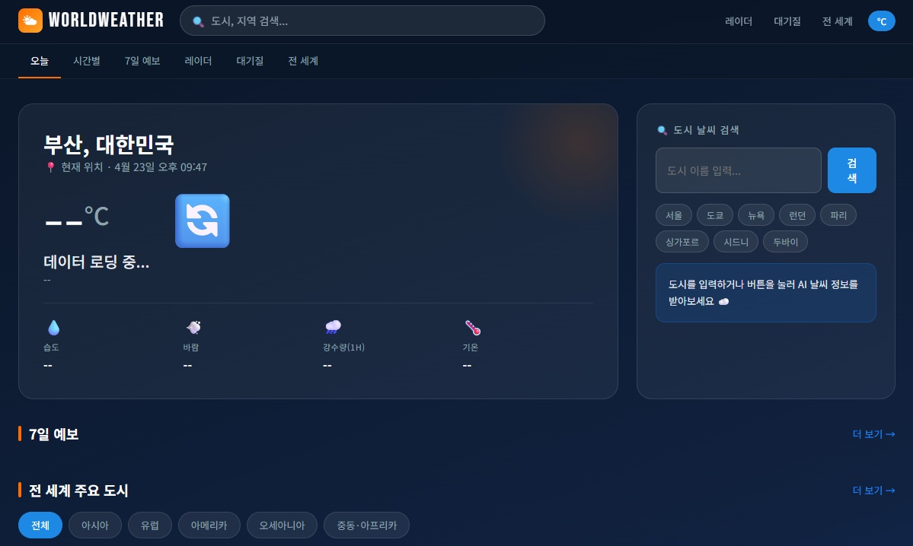
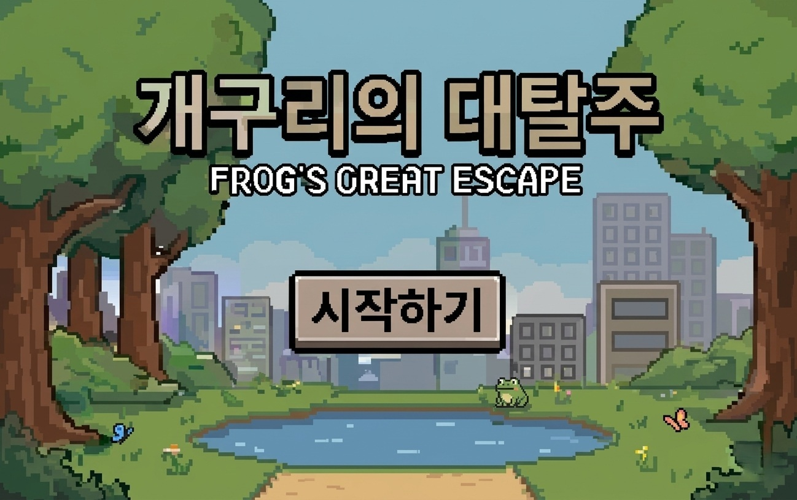
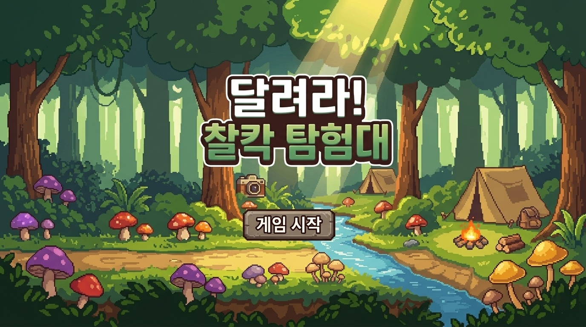

관심 분야
Cloud / Infra
주요 스택
AWS · Docker
학번
202095073
About Me
저를 소개합니다
👩💻
이유빈
예비 클라우드 개발자
학번202095073
전공컴퓨터공학
관심Cloud / Backend
안녕하세요! 클라우드 인프라와 백엔드 개발에 관심이 많은 예비 개발자 이유빈입니다.
서버가 어떻게 대규모 트래픽을 처리하는지, 데이터가 어떻게 흐르는지에 대한 호기심에서 개발을 시작하게 되었습니다.
클라우드 환경에서 안정적이고 확장 가능한 시스템을 설계하는 것을 목표로, 실제 서비스에 가까운 프로젝트를 통해 실력을 키워나가고 있습니다.
현재는 AWS와 Docker를 중심으로 인프라를 공부하며, 백엔드 API 설계와 데이터베이스 최적화에도 관심을 갖고 있습니다.
Skills
기술 스택
Languages
Python
Java
JavaScript
SQL
Bash
C#
Frameworks & Libraries
Spring Boot
Flask
Node.js
React
Unity
Cloud & DevOps
AWS (EC2 / S3 / RDS)
Docker
Linux
Git / GitHub
Database
MySQL
PostgreSQL
MongoDB
Projects
프로젝트

기상청 날씨 프록시 서버
프로젝트 개요
브라우저 CORS 문제를 해결하고 인증키를 서버에서 안전하게 관리하는 기상청 공공데이터 API 프록시 서버.
- Express 프록시로 CORS 우회 및 .env 기반 인증키 보안 관리 구현
- Promise.allSettled로 초단기실황·예보·단기예보 3개 API 병렬 호출 및 부분 장애 허용 설계
- 발표 기준시간 자동 계산 로직 및 Claude Haiku AI 프록시 엔드포인트 추가 연동

Unity 2D 개구리 대탈주
프로젝트 개요
플레이어가 자동차와 악어 등 장애물을 피해 목표 지점까지 이동하는 Frogger 스타일의 Unity 2D 개구리 대탈주.
- GameManager · StageManager · GameTimer로 전체 게임 흐름 및 스테이지 관리 구현
- CarSpawner · CrocodileSpawner로 장애물 자동 생성 및 이동 패턴 설계
- Checkpoint · GoalFlag · FinalScoreDisplay로 진행 상황 및 점수 시스템 구현

Unity 2D 달려라! 찰칵 탐험대
프로젝트 개요
펭귄·여우·비둘기 등 동물 캐릭터가 등장하는 눈·얼음 배경의 Unity 2D 사이드스크롤 런게임. 3개의 스테이지로 구성.
- PlayerController로 달리기·점프·슬라이딩 애니메이션 및 이동 처리 구현
- ObjectSpawner · ObstacleMovement로 장애물 자동 생성 및 이동 패턴 설계
- StageData · GameManager · FinalScoreDisplay로 3스테이지 진행 및 점수 시스템 구현
Contact
연락처
항상 밝은 부분으로 최선을 다하는 모습을 보여드리겠습니다! 감사합니다! 😊
서버와 데이터를 지휘하고 싶은
예비 클라우드 개발자,
이유빈입니다.